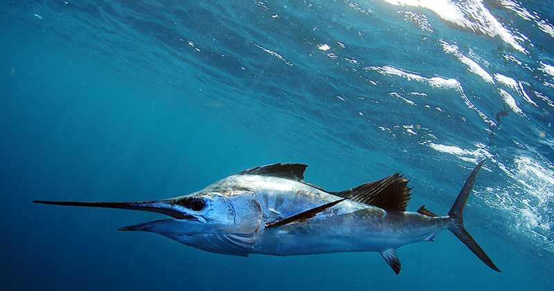

Shallowest
Portuguese Man-of-War, surface
- Size: the body is 9 to 30 cm long, and the stinging tentacles can be up to 50 m long
- Habitat: warm oceans, although sometimes the wind blows them further
- Scientific name: Physalia physalis
- Alternative names: Bluebottle
- It floats because part of its body is filled with gas
- It is not a jellyfish, but four different animals that work together
- Its tentacles are poisonous. It won't kill a human, but it will really really hurt!
- Its name comes from the ships the Portuguese used to invade Brazil about 600 years ago
- In 2017 lots washed up on UK beaches.
Shallower
Clown fish, 12 m
- Size: up to 11 cm
- Habitat: Red Sea, Indian Ocean, western Pacific
- Scientific name: Amphiprioninae
- All clownfish are born male
- Males can become female, but they can't go back
- The anenomes they live in have killer stings, but the clownfish is protected by a layer of mucus on its skin
- They live in groups led by a dominant female, the largest fish in the group
Shallow
Atlantic blue marlin, 40m

- Size: up to 4m
- Habitat: Atlantic Ocean
- Scientific name: Makaira nigricans
- The Atlantic blue marlin is one of the biggest fish in the world
- Blue marlins feed on mackerel and tuna, but will dive deeper to eat squid
- Their upper jaw is long, lethal, and shaped like a spear
- They like to follow boats as the movement of the water stirs up a lot of food for them to eat
Deep
Great barracuda, 110 m
- Size: up to 1.5 m
- Habitat: Tropical and subtropical Indian, Atlantic and Pacific oceans, near the coast
- Scientific name: Sphyraena barracuda
- They can live up to 14 years
- They can swim very fast, and use this to surprise their prey
- They are reported to have mistaken shiny rings for silvery fish, so take off your jewellery if you swim with them!
- They can live in coral reefs, seagrasses and mangroves, but also in the open ocean
Deeper
Bluntnose six gilled shark, 2490 m
- Size: up to 5m
- Habitat: Worldwide in tempereate and tropical seas
- Scientific name: Hexanchus griseus
- Sixgill sharks have six gills, which is one more gill than most other shark species
- The sixgill shark was discovered in 1788
- Adult sixgills become distressed when exposed to light
- Typically, these sharks swim on their own and not in groups
Deepest
Snailfish, 8145 m
- Size: up to 30cm
- Habitat: Mariana Trench - location of the deepest discovered snailfish
- Scientific name: Careproctus
- Snailfish are shaped like long tadpoles
- Their skin doesn't usually have scales, but it is prickly
- The snailfish found in the deepest parts of the ocean are pale pink
- Snailfish have a sucking disc below their head to help them attach to the ocean floor